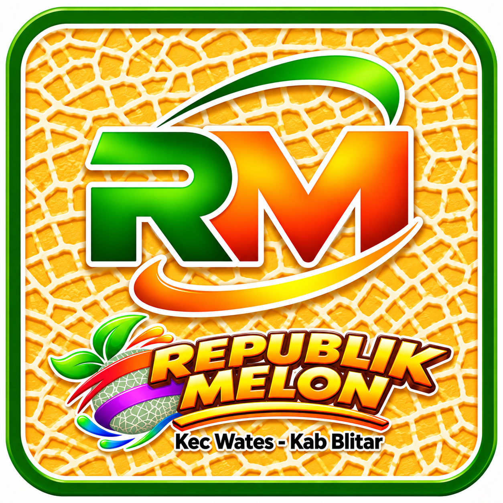
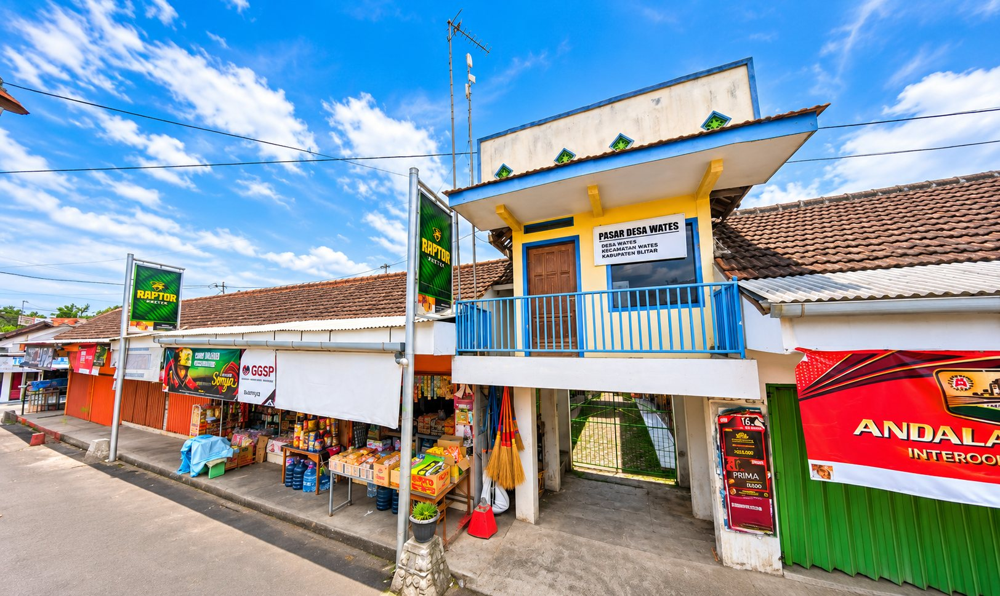

JARINGAN INTERNETNormal
NORMAL

PEMERINTAH KABUPATEN BLITAR
REPUBLIK MELON
PAPAN INFORMASI DIGITAL · KECAMATAN WATES
SENIN · PON
14 November 2026
00:00:00
PUSAT INFORMASI MASYARAKAT
INFORMASI PELAYANAN
ADMINISTRASI KEPENDUDUKAN
Pelayanan Pencetakan
Pelayanan Pencetakan
KTP Elektronik
Informasi ketersediaan blanko dan kesiapan sistem pelayanan Kecamatan Wates.
STATUS KETERSEDIAAN KTP-EL
Menunggu Pengiriman
MENUNGGU PENGIRIMAN
100 KEPING
SISTEM SIAKNormal
NORMAL
INFO PENTING
Pencetakan di Kecamatan Wates diperuntukkan bagi KTP-EL pemula. Pengurusan KTP hilang atau rusak dilayani di Dispendukcapil Kabupaten Blitar.
AGENDA PASAR WILAYAH KECAMATAN WATES
INFO PASARAN
